Aufnahmen der tatsächlich umgesetzten App mit synthetischen Dokumenten. Dateiliste, Details, Formulare und Auswahlblätter verwenden den gemeinsamen mobilen Aufbau. Lange Inhalte sind scrollbar; ein Antippen öffnet das Einzelbild.
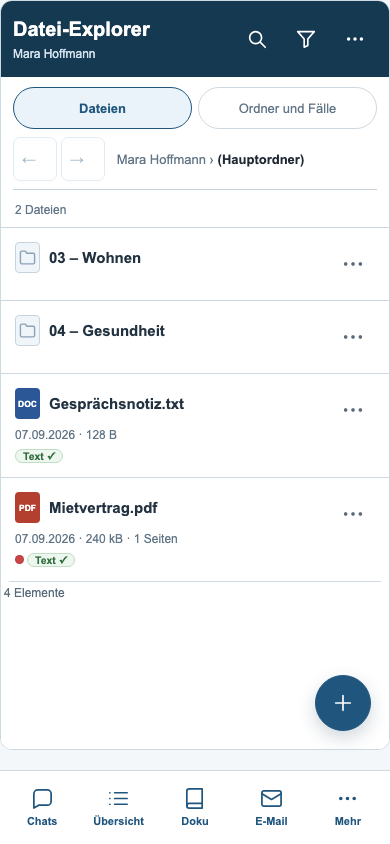
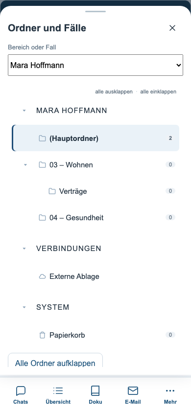
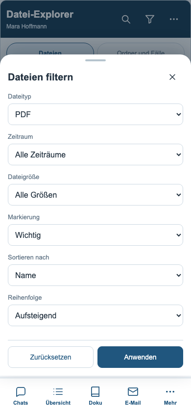
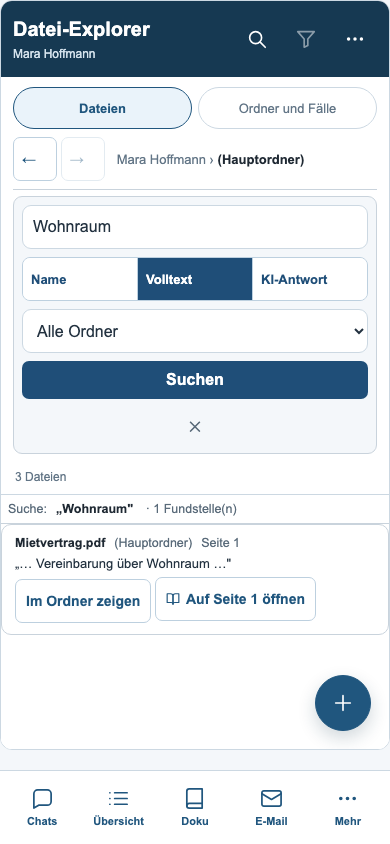
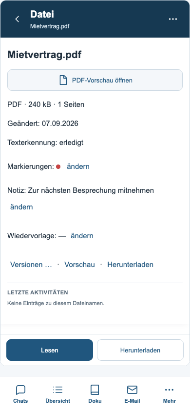
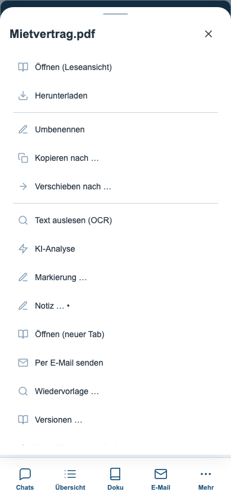
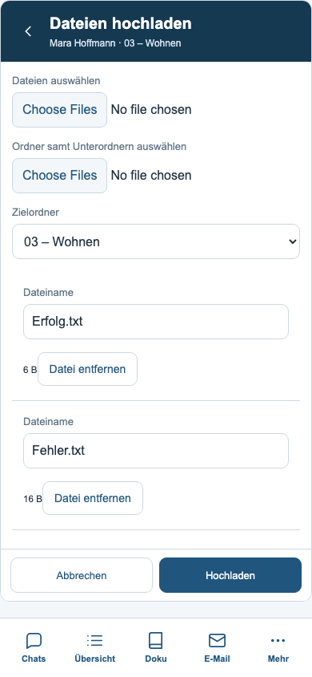
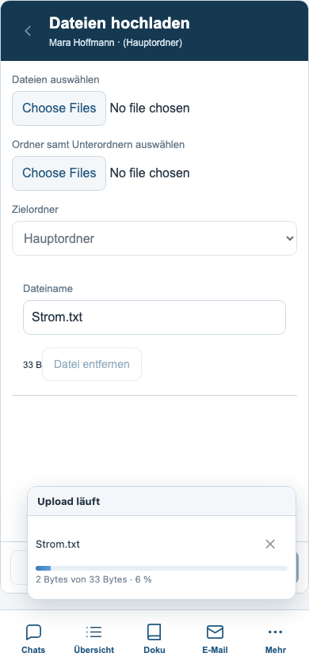
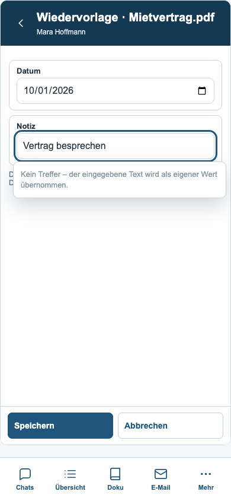
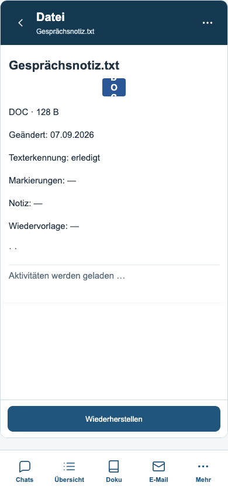
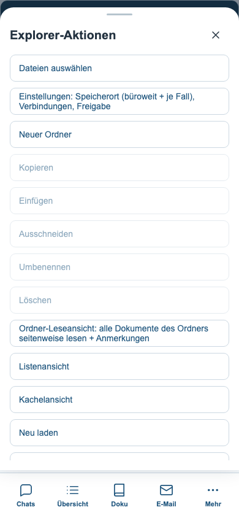
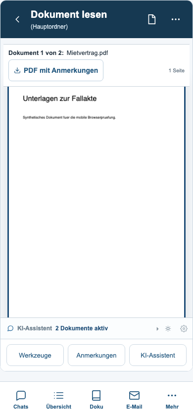
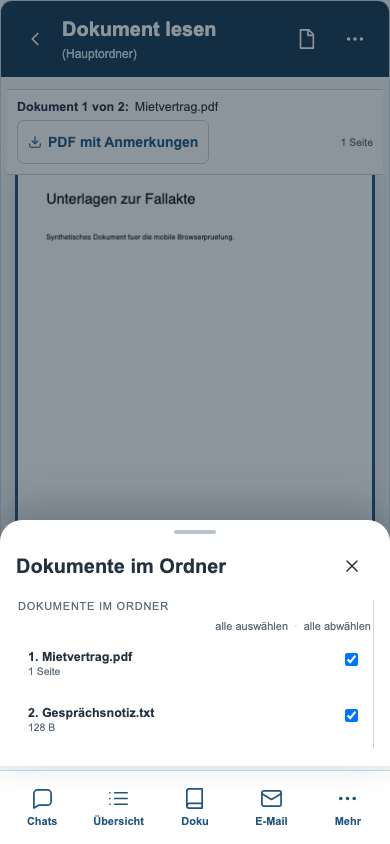
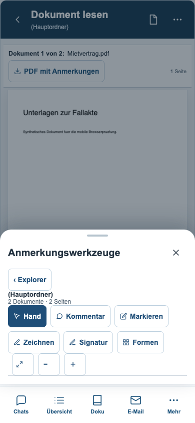
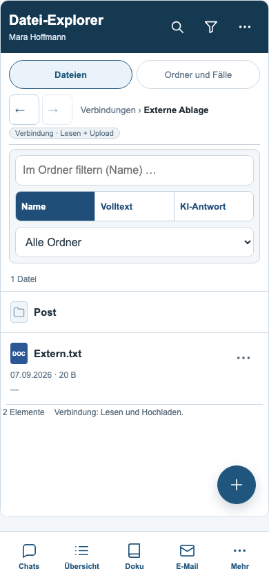
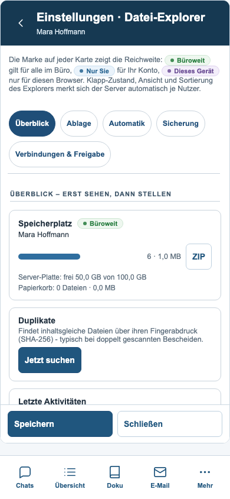
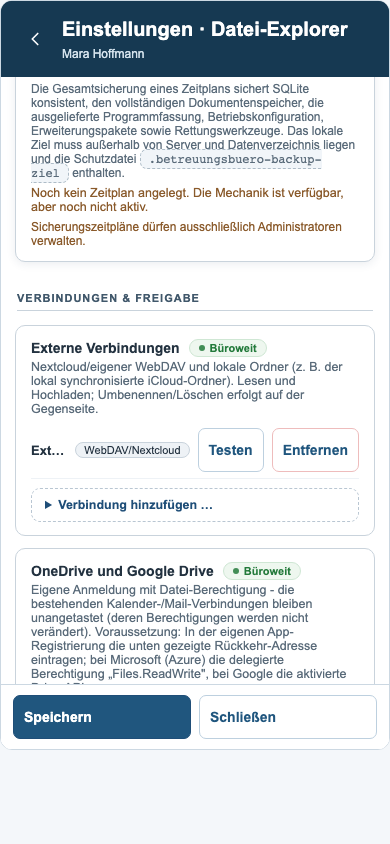
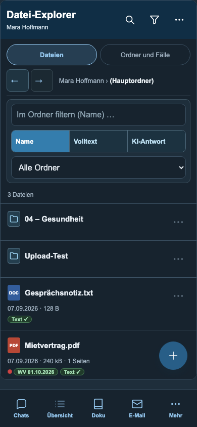
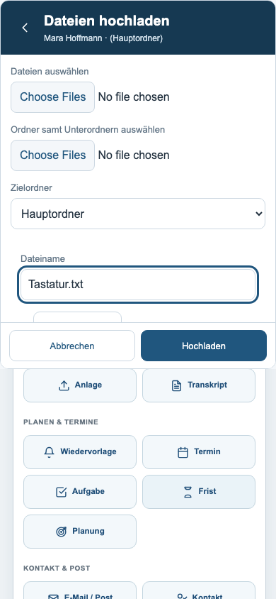